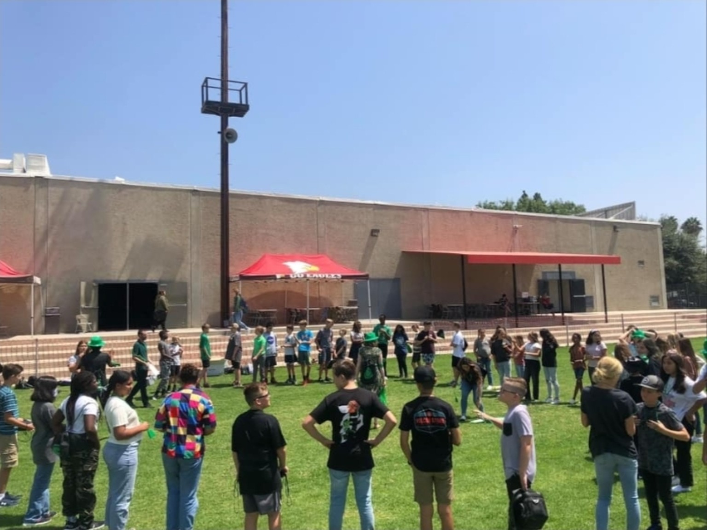
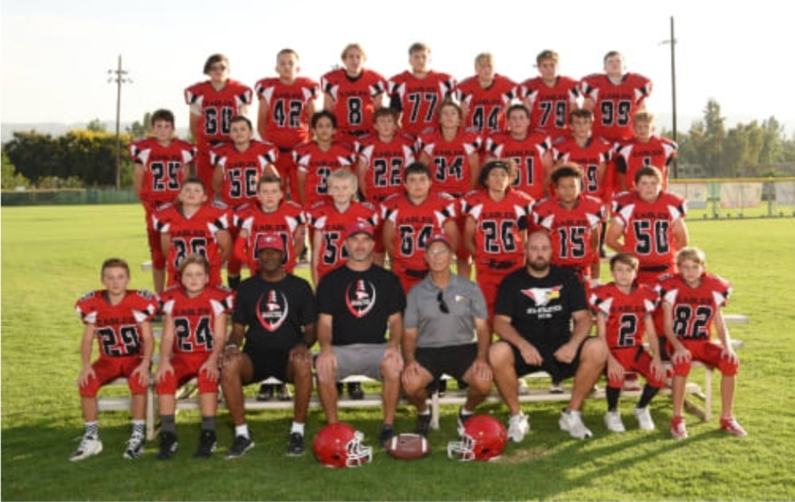
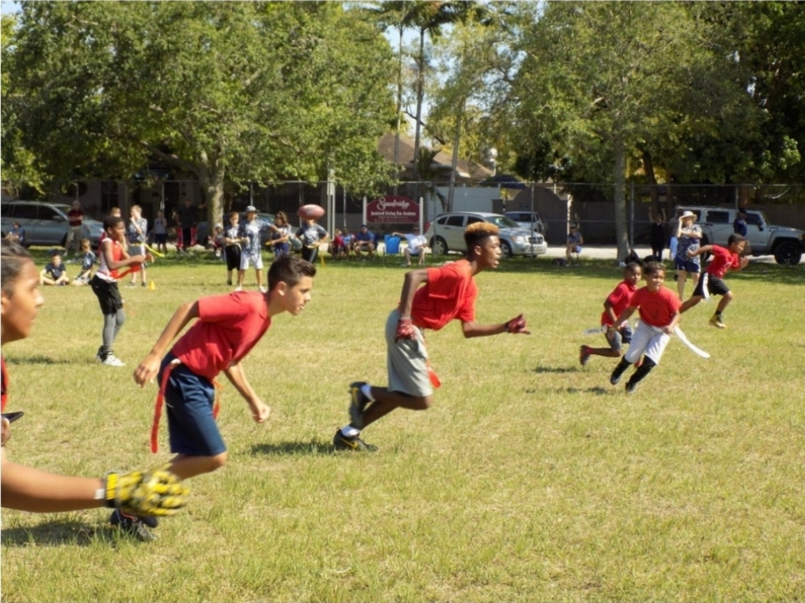
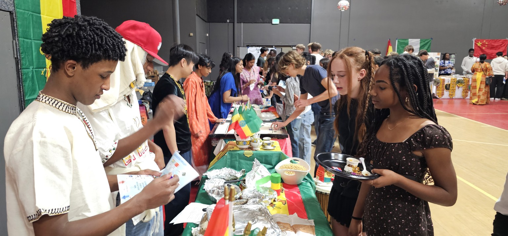
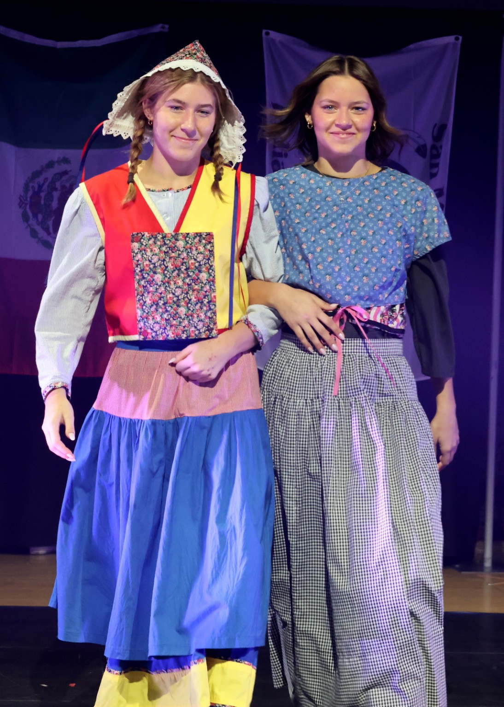
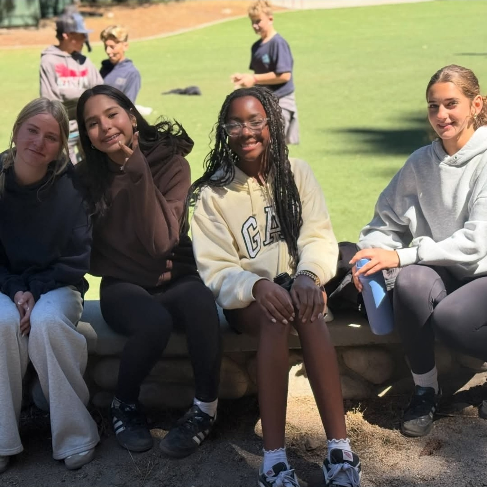
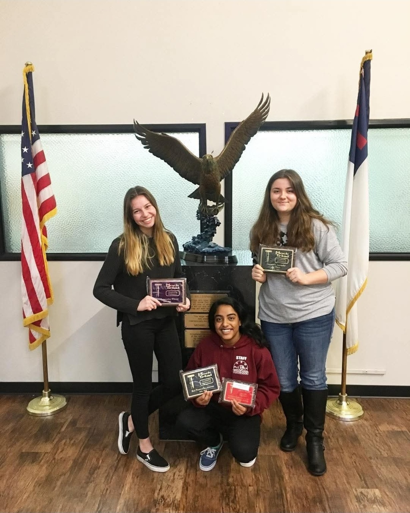
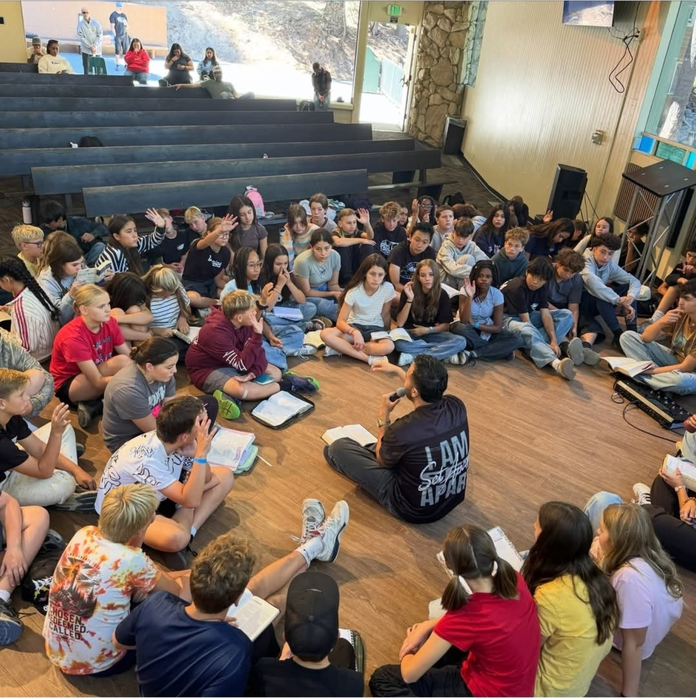
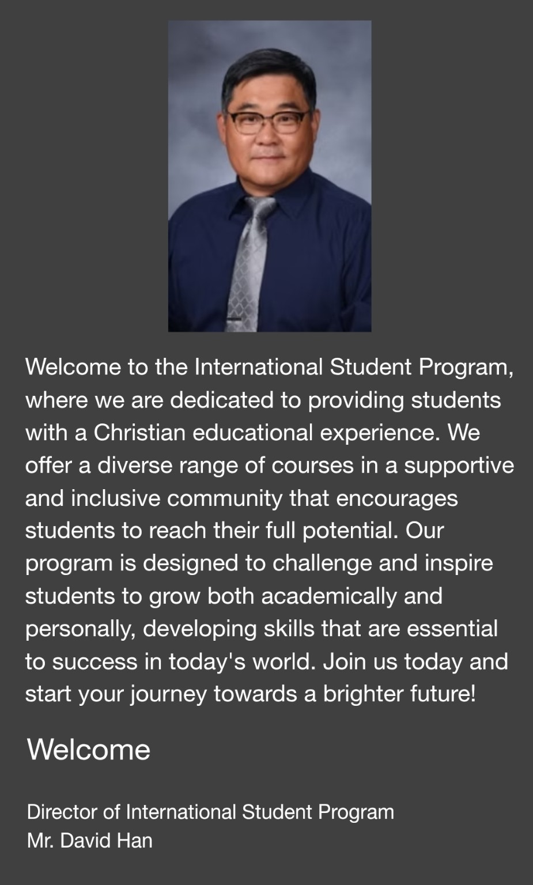
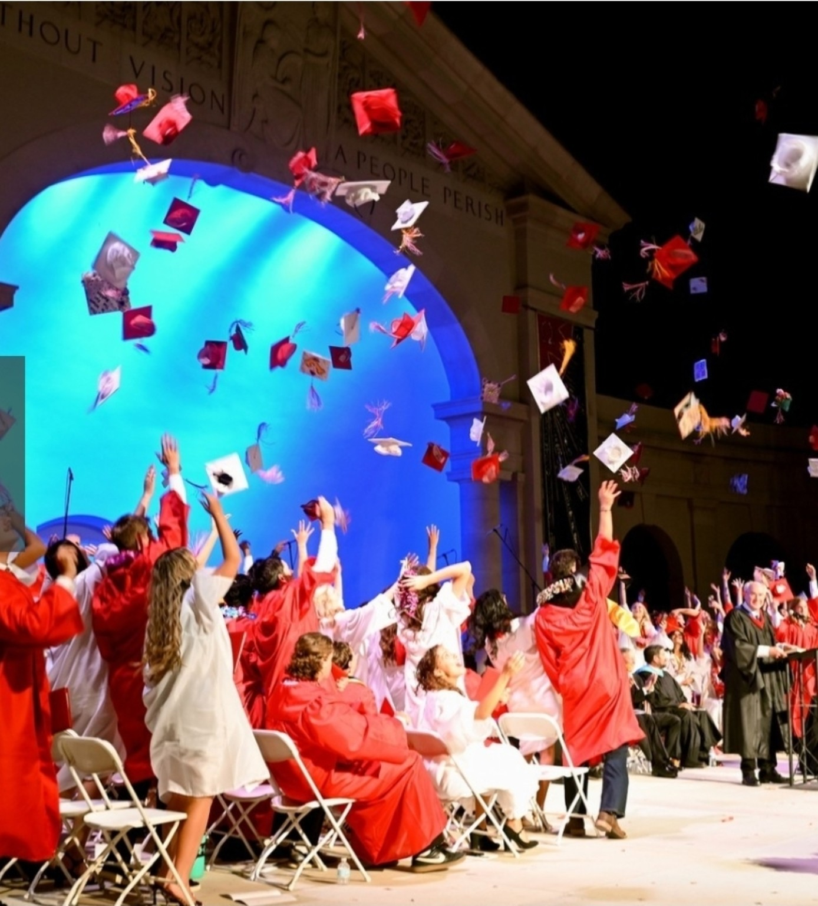

Đào sâu kiến thức
Khám phá các môn AP và Honors cùng những môn tự chọn về lập trình, kỹ thuật và khởi nghiệp.
Khám phá chương trình học ↗REDLANDS, CALIFORNIA · CỘNG ĐỒNG QUỐC TẾ
Nơi những nền văn hóa trở thành tình bạn,
và việc học dựa trên đức tin mở ra những cơ hội mới.
Bắt đầu câu chuyện của bạn cùng GVL tại Redlands.
NƠI BẠN THUỘC VỀ
Một khởi đầu mới tại đất nước mới.
Một hành trình cùng nhau.
GVL (Global Vision Leadership) là cộng đồng gắn kết với Arrowhead Christian Academy, trường trung học thuộc Redlands Christian Schools. Học sinh từ nhiều nền tảng khác nhau chia sẻ văn hóa và cùng trưởng thành trong đức tin Cơ Đốc.
Tôn trọng sự đa dạng, mong muốn thấu hiểu nhau và can đảm tạo ra thay đổi tích cực: đó là những giá trị GVL trân trọng.
Thông tin chính thức về chương trình học sinh quốc tế ↗Tôn trọng những nền văn hóa và ý tưởng đa dạng, khám phá các góc nhìn vượt ra ngoài lớp học.
Khám phá tiềm năng trong cộng đồng Cơ Đốc và tìm định hướng cho việc học cũng như cuộc sống.
Qua sự tử tế và hợp tác mỗi ngày, nuôi dưỡng tinh thần của người lãnh đạo biết phục vụ.
TÌM HIỂU VỀ TRƯỜNG · LỚP 9–12
Arrowhead Christian Academy Upper School giảng dạy từ lớp 9 đến lớp 12, thuộc Redlands Christian Schools tại Redlands, California. Thế giới quan Cơ Đốc kết nối kiến thức học thuật với việc phát triển nhân cách.
Khám phá các môn AP và Honors cùng những môn tự chọn về lập trình, kỹ thuật và khởi nghiệp.
Khám phá chương trình học ↗Bộ phận Academic Services tư vấn học tập, nghề nghiệp và các vấn đề cá nhân, xã hội. Một số môn đủ điều kiện cho phép tích lũy tín chỉ đại học thông qua Colorado Christian University; việc công nhận tín chỉ phụ thuộc vào trường tiếp nhận.
Hỗ trợ học tập ↗Năm lộ trình tự chọn gồm STEM, khoa học vận động, nghệ thuật thị giác và biểu diễn, báo chí và nghiên cứu toàn cầu. Các môn nâng cao, trải nghiệm thực tế và hồ sơ học tập giúp học sinh khám phá chuyên sâu; việc hoàn thành được ghi nhận khi tốt nghiệp.
Khám phá các lộ trình ↗Các lớp Kinh Thánh, giờ thờ phượng hằng tuần và kỳ tĩnh tâm kết hợp với những cơ hội tham gia mỹ thuật, âm nhạc, sân khấu, quần vợt, golf và bơi lội.
Khám phá đời sống học đường ↗Dựa trên thông tin chính thức của trường được tham khảo vào tháng 9/2026. Môn học và hoạt động có thể thay đổi mỗi năm; vui lòng xác nhận điều kiện tham gia với trường.
HỌC HỎI. KẾT NỐI. TRƯỞNG THÀNH.
Chương trình học sinh quốc tế tại Redlands Christian Schools
đồng hành cùng học sinh trong học tập và cuộc sống hằng ngày.

Chương trình ESL và các dịch vụ hỗ trợ giúp học sinh thích nghi với môi trường học tập mới và đón nhận thử thách học thuật.
Khám phá sở thích và kết bạn qua các hoạt động như ban nhạc, hợp xướng, thể thao, kỷ yếu và câu lạc bộ phục vụ cộng đồng.
Các gia đình bản xứ Cơ Đốc kết nối với trường mang đến cơ hội chia sẻ đời sống thường ngày và trải nghiệm văn hóa mới.
Vui lòng liên hệ chương trình học sinh quốc tế để tìm hiểu điều kiện tham gia và sắp xếp ở cùng gia đình bản xứ.

Cùng hướng tới một mục tiêu giúp chúng ta gắn kết thành một đội.

Tình bạn lớn lên qua niềm vui khi vui chơi và dành thời gian bên nhau.
LỄ HỘI QUỐC TẾ · NGÀY HỘI QUỐC TẾ
Tại Lễ hội Quốc tế, học sinh chia sẻ văn hóa qua ẩm thực, trang phục truyền thống, thuyết trình và biểu diễn. Lắng nghe câu chuyện của nhau và cùng khám phá giúp học sinh hiểu và tôn trọng những lối sống khác nhau.


CHIA SẺ VĂN HÓA CỦA BẠN. KHÁM PHÁ VĂN HÓA CỦA NHAU.
Tại gian hàng mỗi quốc gia, học sinh trở thành người hướng dẫn cho nhau. Giới thiệu một món ăn quen thuộc hay hỏi về một phong tục mới giúp việc học vượt ra ngoài lớp học và mở đầu những cuộc trò chuyện.
Bản tin Chương trình Học sinh Quốc tế ngày 6/3/2026 giới thiệu các gian hàng văn hóa, tiết mục biểu diễn và giờ thờ phượng quốc tế trong tuần lễ Ngày hội Quốc tế. Từ văn hóa Ghana và Nigeria đến gian hàng Mexico, các trải nghiệm ẩm thực và bài thuyết trình do học sinh dẫn dắt gắn kết cộng đồng trường.
NHỮNG NGÀY ĐÁNG NHỚ
Tiếng cười cùng bạn bè. Niềm vui chinh phục thử thách.
Thời gian để kết nối và sẻ chia.

Những câu chuyện khác nhau hòa thành kỷ niệm chung.

Theo đuổi điều mình yêu thích và chúc mừng sự trưởng thành của nhau.

Đặt câu hỏi và lắng nghe,
chúng ta ngày càng gần nhau hơn.
CÂU CHUYỆN HỌC SINH HƯ CẤU
Phỏng vấn hư cấu · Câu chuyện minh họa
Các nhân vật và câu trả lời được sáng tác để hình dung đời sống học sinh.
Đây không phải lời chứng thực của học sinh thật hay phát ngôn của người trong ảnh.
Hỏi: Em thích khoảnh khắc nào nhất trong ngày?
Trò chuyện với bạn bè vào giờ ăn trưa. Ban đầu em ngại nói tiếng Anh, nhưng em đã gặp những người bạn thật sự lắng nghe. Giờ mỗi sáng em đều tò mò hôm nay chúng em sẽ nói chuyện gì. Em rất thích đến trường này.
Bạn không cần nói hoàn hảo ngay từ đầu. Hãy thử mỉm cười và chào một câu đơn giản. Với em, lời chào nhỏ ấy đã mở đầu một tình bạn!
Hỏi: Em đã thay đổi như thế nào ở trường?
Trước đây em thường tránh thuyết trình vì sợ mắc lỗi. Nhưng thầy cô muốn nghe ý kiến của em, còn bạn bè luôn động viên. Dần dần, em bắt đầu giơ tay phát biểu. Càng tham gia, em càng thấy các giờ học và hoạt động thú vị. Cuối mỗi ngày, em đều cảm thấy mình học được điều mới.
Cười nói cùng bạn bè sau một bài thuyết trình. Dù chưa hoàn hảo, em vẫn rất vui vì mình đã tiến thêm một bước.
Hỏi: Điều gì khiến ngôi trường này đặc biệt với em?
Có ngày chúng em cùng cười; có ngày lại chia sẻ những tâm sự. Trò chuyện về đức tin và cầu nguyện cho nhau giúp em bình an. Bên cạnh việc học, em còn học cách quan tâm đến người khác. Em biết ơn những người bạn tốt và ngôi trường mà em luôn vui khi đến.
Em muốn làm quen với một bạn mới và mời bạn cùng tham gia. Em mong một học sinh khác cũng cảm nhận được sự ấm áp mà em đã nhận được.
SỨ MỆNH CỦA CHÚNG TÔI
Tôn trọng khác biệt và khám phá giá trị của mỗi nền văn hóa.
Kết nối đức tin và cộng đồng, cùng nhau trưởng thành.
Đó là tầm nhìn cốt lõi của GVL.

LỜI CHÀO TỪ GIÁM ĐỐC
Chào mừng đến với Chương trình Học sinh Quốc tế. Chúng tôi tận tâm mang đến cho học sinh nền giáo dục Cơ Đốc, với nhiều môn học đa dạng trong một cộng đồng hỗ trợ và cởi mở, khuyến khích mỗi em phát huy tối đa tiềm năng.
Chương trình được thiết kế để thử thách và truyền cảm hứng, giúp học sinh phát triển cả về học thuật lẫn bản thân, đồng thời xây dựng những kỹ năng cần thiết cho thành công trong thế giới ngày nay. Hãy cùng chúng tôi bắt đầu hành trình hướng tới một tương lai tươi sáng hơn!
Ông David Han
Giám đốc Chương trình Học sinh Quốc tế
Lời chào được cung cấp cho trang này · Bản dịch

CHƯƠNG TIẾP THEO
Những ngày đầy tiếng cười, thử thách và trưởng thành.
Mỗi chiếc mũ tung lên mang theo một câu chuyện về hành trình đã qua.
Với kiến thức và tình bạn đồng hành,
một thế giới rộng lớn và chương mới đang chờ.
CHƯƠNG TIẾP THEO BẮT ĐẦU TỪ ĐÂY
Từ quy trình đăng ký đến đời sống học đường,
hãy trò chuyện với Chương trình Học sinh Quốc tế.
Giám đốc Chương trình Học sinh Quốc tế
dhan@redlandschristian.org ↗